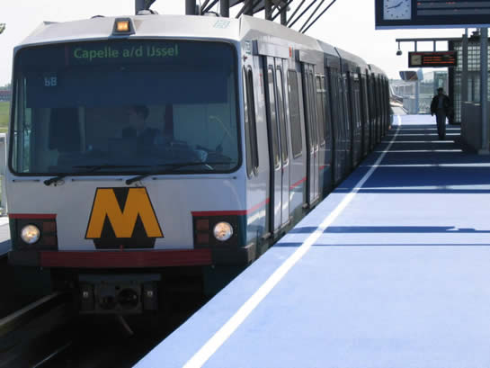

Gratis OV-proef na de zomer en ander nieuws...
- woensdag 10 december 2008 21:36
- Geschreven door Joachim
Na de zomer komt de PvdA Rotterdam met een initiatiefvoorstel in de Rotterdamse gemeenteraad voor een proef met gratis openbaar vervoer. Het idee berust op een systeem waarbij de Rotterdammer een eenmalig bedrag betaalt, en daarmee een jaar lang gratis van het openbaar vervoer in de stad gebruik kunnen maken.
De PvdA-fractie gaat hierbij in op een plan van partijleider Bos, hij pleitte onlangs - tijdens een bezoek aan Rotterdam - voor gratis openbaar vervoer in de stad. De partij meldt eveneens dat het niet de bedoeling is het OV gratis te maken op één of enkele lijnen, maar dit meteen toe te passen op het gehele vervoersgebied van de RET, bínnen de stadsgrenzen.
Als de proef door zou gaan, dan doen buurtgemeenten van Rotterdam niet mee. Dit doordat de besluitvorming dan té lang duurt om de proef nog na de zomer te starten. De reizigers in de buurtegemeenten kunnen daarom - als de proef doorgaat - met hun strippenkaart of abonnement blijven reizen.
In de jaren zeventig pleitte staatssecretaris Van Hulten al voor gratis openbaar vervoer. De partijen die het voorstel van de PvdA steunen (SP, GroenLinks en de Stadspartij) hadden met Van Hulten eerder een gesprek over de invoering van gratis openbaar vervoer. De gevolgen voor de Rotterdamse inwoner en de RET zijn nog niet bekend, dit wordt de komende maanden nog berekend door de PvdA.
Onregelmatige dienstregeling
Door de hoge temperaturen van vandaag hadden diverse metrostellen te kampen met kleine problemen. Bij de hoge temperaturen hebben de deuren van Type T zoals elke zomer vaak problemen bij het sluiten. Dit komt doordat het deursysteem geheel op lucht gaat, die uitzet wanneer het warm wordt. Metrotreinen die met deurproblemen kampten werden uit de dienst gehaald.
Ook kwam er nog een metrostel stil te staan ter hoogte van het wisselcomplex bij de Pres. Rooseveltweg, dit gebeurde omstreeks 14.30. Het metrostel kon het dichtstbijzijnde station nog bereiken, daar werd de metro uit de dienst genomen en naar het depot gebracht. Door de hitteproblemen liepen verschillende metrodiensten vertraging op en werd er onregelmatig gereden.
Pernis
Op station Pernis werd vanmorgen tijdelijk enkelspoorbedrijf gereden, dit doordat de laatste fase van de perronvernieuwing afgemaakt moest worden. Dit betrof het aanmaken van de witte streep op de rand van het perron. Ook het enkelspoorbedrijf had gevolgen voor de dienstregeling, die hierdoor onregelmatig werd.

5235 komt station Pernis binnen, het perron ruikt nog naar de nieuwe verf...
Werkzaamheden Rotterdam Centraal
Door de vernieuwing van het computersysteem voor de besturing van seinen en wissels rijden er bij de NS geen treinen op zondag 13 juni in de regio Rotterdam. Dit geldt voor de volgende trajecten:
• Rotterdam Centraal–Delft
• Rotterdam Centraal–Vlaardingen Centrum
• Rotterdam Centraal–Gouda
• Rotterdam Centraal–Zwijndrecht
Er zullen treinen uitvallen, een extra reistijd variërend van een half uur tot maximaal twee uur kan voorkomen.
De treinreizigers kunnen gebruik maken van alternatief vervoer: NS-bussen, RET Metro, RET Tram en RET Bus. Hiervoor hoeft geen stedelijk vervoersbewijs gekocht te worden, op vertoon van een geldig NS-vervoerbewijs kan men gebruik maken van het alternatief vervoer.